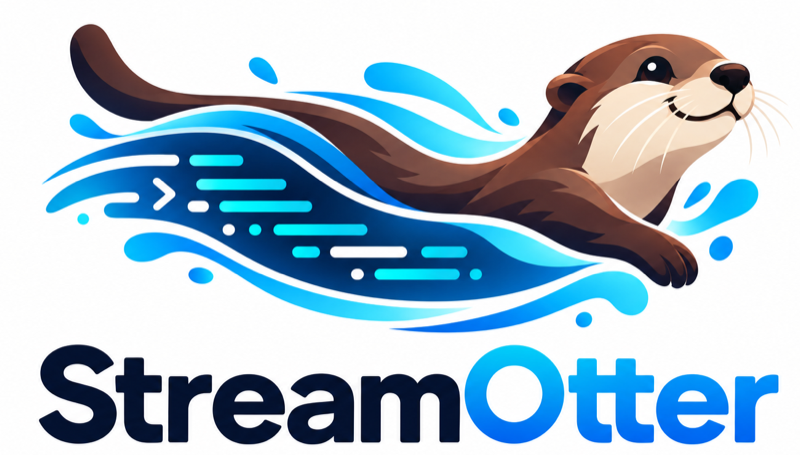

Personal Treasury
A private finance app that turns paycheck plans into transfers, reconciliation, and a history you can follow. Where did it go? There should be a clear answer.
I’m Jason. An attorney, a software builder, and someone who likes a good question. I find them in people, in a garden, under the hood—and sometimes follow them all the way into something useful.
I like making things. Software nearly became my first career; it stayed with me, and what began as a side pursuit has grown into a serious body of work.
The thread through it all is curiosity, followed by care: asking a better question, understanding what’s in front of me, and staying with the details.
I like learning how people think. An odd idea in physics or philosophy can keep me occupied, too. There’s plenty to pay attention to.
When we work together, I ask careful questions, explain my choices, and carry the work from first idea to working application. You’ll know where things stand, understand the decisions along the way, and have something useful you feel confident making your own.
Good questions have a way of opening things up.
IN LIFE, IN WORK,These are a few questions I’ve followed into software. Each one called for a different kind of attention.
A private finance app that turns paycheck plans into transfers, reconciliation, and a history you can follow. Where did it go? There should be a clear answer.

A screen ought to know when it’s out of date.A TypeScript toolkit that brings live Kafka-backed data into a browser—and makes it clear when the information goes stale.
A fictional otter research station with a real streaming pipeline underneath. A small, invented world for putting StreamOtter through its paces.
A pair of mobile apps for finding and correcting information about designated and reported smoking areas in Metro Manila.
A company identity and website for my independent software studio. A clear home for the products, the approach, and the person behind the work.
Some time outside, with room for the day to take a different shape.
A car that needs attention. The pleasure of figuring out what it needs.
Patsy Cline to Radiohead. A playlist doesn’t need to stay in its lane.
People, physics, philosophy. A good conversation can go a long way.
A project, a question, a new theory of quantum gravity. Tell me the rough version. We can start there.
jasonjpf.dev@gmail.com